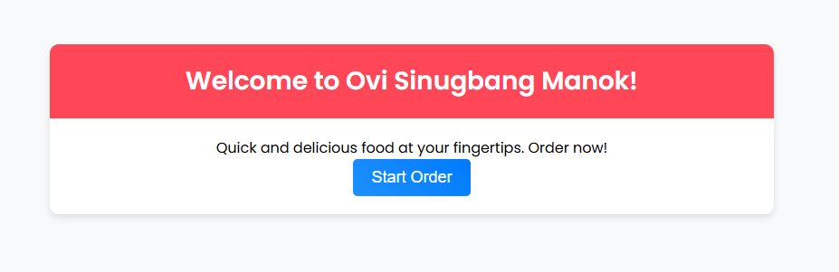
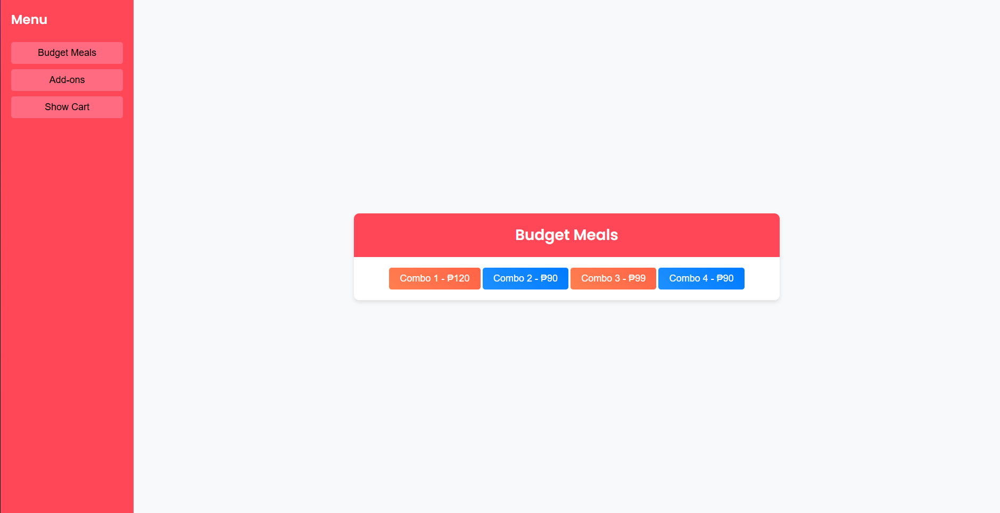
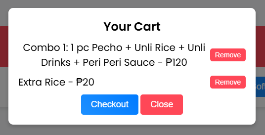
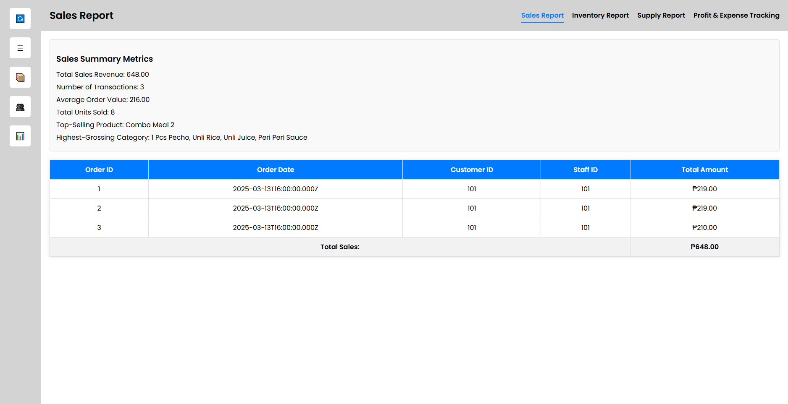
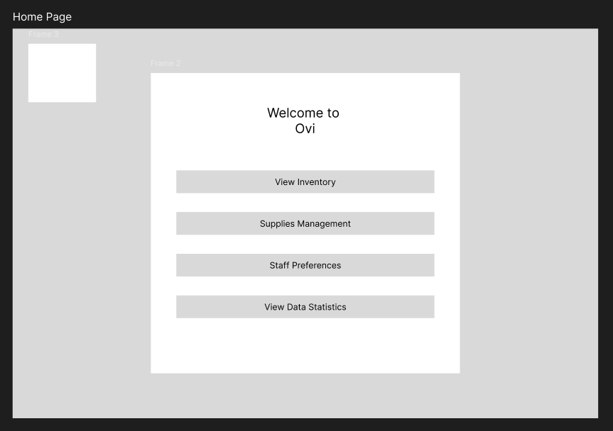
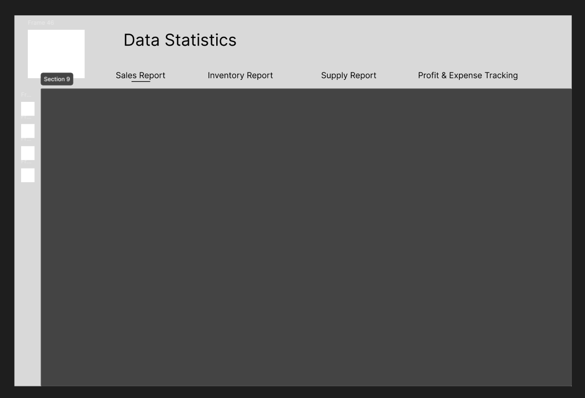

This project aims to streamline the ordering and management process for Ovi Sinugbang Manok's kiosk operations.






Description: Ovi Sinugbang Manok is a kiosk application that simplifies ordering for customers through an easy-to-use interface with budget meal and add-on options. A Node.js/Express API efficiently handles order processing by accurately inserting data into the database, improving both accuracy and user experience.
Features:
Intuitive Kiosk Interface: Provides a user-friendly interface for customers to easily browse the menu, select items, and place orders.
Dynamic Menu Management: Allows easy browsing of both main menu items (meals, combos) and add-on products.
Efficient Order Processing: Enables efficient order creation and submission, ensuring accurate recording of orders with correct categorization of main items and add-ons into the database.
Technologies Used: HTML, CSS, JavaScript, Node.js (Express), MySQL
Live Demo | Source Code